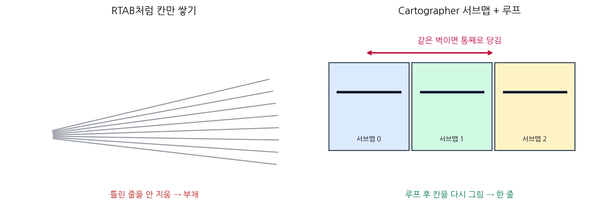
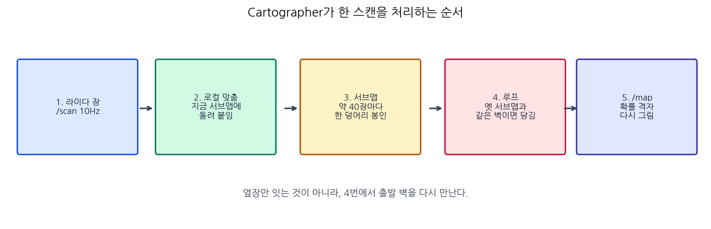
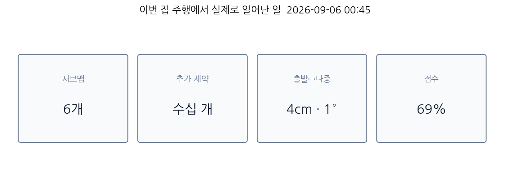
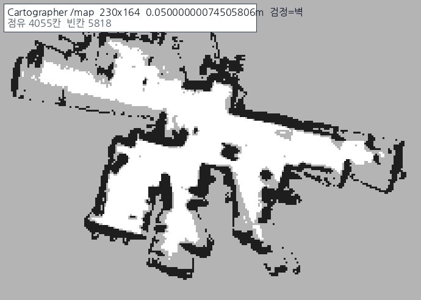

2026-09-06 · Yahboom R2 · 라이다만 · 카메라 없음 · Google Cartographer 2D
Cartographer는 라이다 장을 지금 맵에 돌려 붙이고, 조금 전까지의 지도를 덩어리(서브맵)로 봉인한 뒤, 같은 벽에 돌아오면 그 덩어리들을 한꺼번에 당깁니다. 옆장끼리만 잇는 것이 아닙니다. 출발 벽을 다시 알아채는 루프가 기본입니다. 짧은 집 한 바퀴는 이 소프트웨어가 원래 잘 하는 거리입니다.
센서는 그대로입니다. 라이다, 조이스틱, 차. 카메라 없음. 바뀐 것은 맵을 그리는 프로그램 하나입니다.
RTAB-Map은 원래 카메라로 “여기 다시 왔다”를 찾는 프로그램입니다. 카메라를 끄고 라이다만 쓰면 그 기능이 꺼집니다. 칸은 찍고 안 지웁니다. 그래서 짧게 돌아도 부채가 남았습니다.

왼쪽=틀린 줄을 쌓기만 함. 오른쪽=덩어리를 나중에 다시 붙여 칸을 다시 그림.
| 지금까지 RTAB-Map | Cartographer 2D | |
|---|---|---|
| 원래 목적 | 카메라+깊이로 장소 인식 | 2D 라이다로 실내 맵 |
| 옆장 맞춤 | 우리가 따로 넣음 (scan_to_map) | 프로그램 안에 있음 |
| 같은 장소 | 카메라 없으면 약함 | 옛 서브맵과 스캔을 비교 |
| 칸 | 찍고 남김 | 확률. 루프 후 다시 그림 |
| 바퀴 오돔 | EKF가 자세의 기준 | 안 씀. 라이다가 자세를 맡음 |

/scan 약 10Hz. 이 차에서는 0.20~8.0m만 씁니다./map입니다.두 단계입니다.
use_online_correlative_scan_matching).기준은 이미 그린 서브맵입니다. 옆장만 맞추면 둘 다 같이 돌아도 점수가 높았습니다. 서브맵에 맞추면 “이미 그린 벽”이 기준이라, 같이 도는 것을 막습니다. 앞에서 말한 “이미 그린 벽에 붙이기”가 여기 들어 있습니다.
지도를 한 장에 계속 칠하지 않습니다. 짧은 구간을 하나의 덩어리로 만듭니다. 이 설정에서는 스캔 약 40장마다 새 서브맵입니다. 집 한 바퀴면 여러 덩어리가 생깁니다. 이번 주행은 6개였습니다.
덩어리 안은 로컬 맞춤으로 비교적 곧습니다. 덩어리와 덩어리 사이 각도가 틀어질 수 있습니다. 그 틀어짐을 고치는 것이 다음 단계 루프입니다.
새 노드가 생기면, 근처(여기선 12m 안)의 옛 서브맵과 비교합니다. 겹침 점수가 0.55 이상이면 제약으로 넣습니다. 노드 20개마다 경로 전체를 다시 풉니다.
검색 창은 위치 5m, 각도 ±30°입니다. 집 안에서 “출발 벽이 다시 보인다” 정도는 이 창에 들어갑니다.
제약이 들어가면 그동안의 자세가 한꺼번에 조금 움직입니다. 그다음 칸을 다시 그립니다. 옆장만 이을 때 쌓이던 각도가 여기서 빠집니다.
칸은 “벽이다/아니다”를 한 번 찍고 끝이 아닙니다. 각 칸에 확률을 둡니다. 레이저가 그 칸에서 맞으면 벽 쪽으로, 통과하면 빈칸 쪽으로 갑니다. 루프가 자세를 고치면 격자를 다시 만듭니다.
해상도 5cm. 노드 cartographer_occupancy_grid_node가 0.5초마다 /map을 발행합니다.
라이다는 서 있어도 같은 벽을 봅니다. 문제는 자세가 노이즈로 밀리면 같은 벽이 옆칸에 찍히는 것이었습니다.
Cartographer는 움직인 거리가 5cm 미만이고 각도가 1° 미만이면 노드를 안 넣습니다. 시간은 최대 5초. 이번 주행 로그에 “Motion filter reduced the number of nodes to 43% → 23%”가 나왔습니다. 서 있는 구간의 스캔을 버린 것입니다. 칠을 끄는 것이 아니라, 같은 자리 노드를 안 늘리는 것입니다.


점유 4055칸. 벽이 한 줄에 가깝다. RTAB 때처럼 전체가 검게 부채로 뭉개지지 않음.
| 항목 | 값 |
|---|---|
| 라이다 | 10.1Hz, 정상 |
| 서브맵 | 6개 (0~5) |
| 추가된 루프 제약 | 배치마다 9~31개 |
| 출발 노드 ↔ 서브맵 3 | 이동 0.04m, 회전 0.020rad (약 1°), 점수 68.6% |
| 저장 | ~/maps/cartographer/20260906_004700.pbstream |
| 그림 | docs/img/20260906_004735_Cartographer결과맵.png |
아직 두꺼운 벽 구간은 있습니다. 한 바퀴를 더 돌며 같은 벽을 반복하면 루프가 더 넣고, 줄이 더 얇아지는 것이 이 알고리즘의 정상적인 다음 단계입니다.
파일 scripts/params/r2_cartographer.lua. 바퀴 오돔·IMU는 끄고 라이다만 씁니다. 조향 오돔이 각도를 틀리던 길을 피한 것입니다.
| 항목 | 값 | 이유 |
|---|---|---|
| tracking / published | base_footprint | 차 바닥 기준. 라이다 TF는 base_link→laser |
| use_odometry | false | Ackermann 오돔과 싸우지 않음 |
| use_imu_data | false | 보드 IMU가 2D 자세에 노이즈를 넣던 경험 |
| min / max range | 0.20 / 8.0 m | 이 라이다·실내 |
| 실시간 검색 창 | ±15cm, ±20° | 로컬 드리프트 흡수 |
| 서브맵 크기 | 40 스캔 | 짧은 집 루프가 여러 덩어리를 만나게 |
| 최적화 주기 | 노드 20개마다 | 기본 90은 한 바퀴에 너무 늦음 |
| 루프 최소 점수 | 0.55 | 실내 벽. 너무 높으면 출발 벽을 놓침 |
| 루프 검색 | 5m, ±30° | 집 크기 |
| 모션 필터 | 5cm / 1° / 5s | 서 있으면 노드를 안 늘림 |
| 격자 | 5cm | 점유맵 해상도 |
| 파일 | 역할 |
|---|---|
scripts/params/r2_cartographer.lua | 위 설정 |
scripts/launch/cartographer_managed.launch.py | 라이다+조이스틱(오돔 없음)+Cartographer+점유격자 |
scripts/start_cartographer.sh | 켜기 |
scripts/stop_robot_stack.sh | 끄기 (cartographer_node 포함) |
scripts/mapping_speed_guard.py | 조향 한도 0.045, 속도 0.35 |
bash ~/ROSMASTER-R2-fork/scripts/start_cartographer.shbash ~/ROSMASTER-R2-fork/scripts/stop_robot_stack.sh/write_state 서비스. 이번 파일은 ~/maps/cartographer/*.pbstream.
RTAB-Map, scan_to_map, EKF 오돔 TF는 이 매핑에 안 켭니다.
기본은 다니면서 맵을 갱신합니다. 카메라는 없습니다.
| 단계 | 내용 | 지금 |
|---|---|---|
| 1. 맵 | 저장된 pbstream을 이어서 그림 | Cartographer. 끄면 yaml/pgm 저장 |
| 2. 위치 찾기 | 같은 프로그램이 맵과 자세를 같이 맡음 | AMCL 없음 (PATROL_UPDATE_MAP=1) |
| 3. 길 계획·따라가기 | Nav2 TEB | navigation_launch.py |
| 4. 순찰 경로 | 지오펜스 안 빈칸 웨이포인트 | 마지막 yaml 기준 |
bash ~/ROSMASTER-R2-fork/scripts/start_patrol.sh.
고정맵만 쓰려면 PATROL_UPDATE_MAP=0 (AMCL).
차는 매핑을 시작했던 자리에 두고 켜세요. 오래 서 있는 사람은 벽으로 남을 수 있습니다.